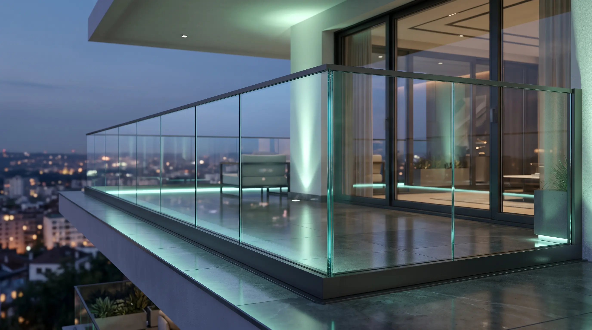

01 • Стеклянные ограждения
Закаленный триплекс 8+8 / 10+10 мм
Стеклянные ограждения террас, балконов и атриумов
Полностью прозрачные барьеры безопасности без вертикальных стоек. Монтаж в скрытый зажимной профиль в пол, на точечные рутели или мини-стойки из морской нержавеющей стали AISI 316.
Выдерживают до 300 кг/м
Свободный край или поручень
Optiwhite / Бронза / Графит